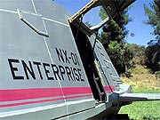
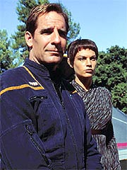
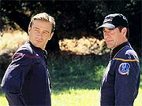
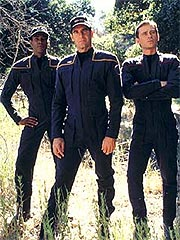
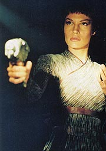
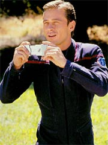
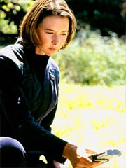
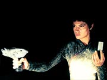
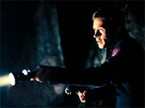

Episdio
anterior | Prximo
episdio
Sinopse:
A Enterprise desvia seu curso de uma
nebulosa para estudar um planeta que poderia abrigar formas de vida
inteligente. Embora ele acabe se mostrando classe Minshara (termo
Vulcano para designar ambientes amigveis a vida humanide), os
sensores no mostram a presena de uma civilizao.

Archer decide
aproveitar a ocasio e promover um estudo do planeta in loco. T'Pol
sugere mais estudos antes de uma visita, mas o capito no est
disposto a esperar os resultados mais conclusivos, que s sairiam
em seis ou sete dias. Ele decide seguir em frente e enviar um grupo
de pesquisa superfcie em um shuttlepod.
A pedido do capito, T'Pol seleciona os membros do grupo de
descida, que inclui, alm de Archer e dela mesma, o engenheiro
Tucker, o piloto Mayweather, a alferes Elizabeth Cutler, o alferes
Ethan Novakovich e o mascote da turma, o cozinho Porthos. Tudo
transcorre normalmente, e T'Pol coleta alguns dados de potencial
interesse. Para poder analisar melhor as informaes, ela pede
autorizao a Archer para permanecer at a manh seguinte no
planeta, acompanhada por Cutler e Novakovich. Embora no tenham
sido requisitados, Tucker e Mayweather pedem para ficar tambm. O
capito autoriza o "acampamento", mas opta por retornar
nave.

Durante a
noite, uma enorme tempestade se aproxima da regio em que o grupo
est acampando, o que os obriga a buscar abrigo em uma caverna
prxima. Ao chegarem ao local, descobrem que esqueceram suas
raes no local do acampamento. Travis Mayweather vai at l
para buscar e, no caminho de volta, tem a impresso de ter visto
trs pessoas.
Ele relata a impresso aos demais, ao retornar caverna. Enquanto
isso, Novakovich comea a ficar mais e mais tenso (ele j estava
sentindo dores de cabea pouco antes da tempestade comear), e
acha que h aliengenas no fundo da caverna. Numa exploso
inexplicvel de raiva, ele conclui que aquele local no seguro
e decide abandon-lo, contrariando uma ordem de Tucker.
O engenheiro convoca Mayweather para acompanh-lo na caa ao
alferes, enquanto T'Pol e Cutler permanecem na caverna. Os dois saem
armados com pistolas de fase, e a Vulcana tambm decide se armar e
investigar para se certificar de que no h de fato ningum
naquele ambiente. Cutler, assustada, tambm se arma, e fica chocada
ao descobrir a Vulcana conversando com outros dois aliengenas.
Quando ela se aproxima para falar com T'Pol, a oficial de cincias
insiste que no havia ningum ali.

Tucker e Mayweather
continuam procura de Novakovich, at quase carem em um
penhasco. Ao escaparem por um fio, eles decidem que perigoso
demais continuar a busca e retornam caverna. Ao voltar, Cutler
relata que viu T'Pol falando com aliengenas, o que deixa Tucker
ainda mais desconfiado da Vulcana.
Enquanto isso, Archer faz contato e descobre que Novakovich est
perdido. Ao contatar o alferes, encontra-o em total estado de
pnico e choque. Sem alternativa, decide tentar teleport-lo a
bordo. Entretanto, uma falha do transporte faz com que ele seja
materializado misturado a folhas e galhos que estavam ao seu redor.
Phlox imediatamente examina o alferes e constata que poder
cur-lo. Entretanto, tambm identifica a presena de um plen
alucingeno que estava afetando seu julgamento. Aps quase perder
Novakovich, o mdico descobre que o nico meio de evitar a morte
injetando um agente para contra-atacar os efeitos nocivos do
plen.

Preocupado
com o bem-estar de seus outros oficiais, Archer decide fazer uma
tentativa de resgate em plena tempestade. Ele desce ao planeta com
Malcolm Reed a bordo de um shuttlepod, mas no consegue
aterriss-lo com segurana, o que o obriga a abortar a tentativa.
Ele contata Tucker e avisa que o resgate s vir quando a
tempestade passar.
O engenheiro, a essa altura, j est extremamente afetado pelo
plen, e acredita que T'Pol esteja envolvida em uma conspirao
Vulcana com os aliengenas do planeta para matar a tripulao da
Enterprise e pr fim sua histrica misso. A tenso atinge
nveis crticos quando Tucker ameaa pr fim vida de T'Pol
caso ela no revele o que est havendo.
Archer contata seu grupo e descobre a situao crtica em que se
encontram. Ele tenta explicar a seu engenheiro que eles foram
afetados pelo plen, mas todos, exceto T'Pol, so incapazes de
entender isso. A Vulcana, embora afetada, a que menos sofre com
os efeitos do alucingeno. Archer instrui Tucker a injetar nele e
nos demais ampolas do agente desenvolvido por Phlox, teleportadas
para dentro da caverna pela Enterprise, mas o engenheiro se recusa a
obedecer.

Vendo que a vida de
T'Pol est sob sria ameaa, o capito decide mudar sua
estratgia, na tentativa de salv-la. Ele diz a Tucker que h de
fato aliengenas na superfcie, e que eles s se comunicam
atualmente com Vulcanos, com quem tiveram contato anteriormente. Ele
instrui Tucker a baixar sua arma, num gesto de boa vontade, para que
os aliengenas concordem em abrir um dilogo.
Ao mesmo tempo, Hoshi Sato se comunica com T'Pol, instruindo-a a
tontear Tucker assim que ele baixar a arma, e ento injetar o
agente nos tripulantes. O engenheiro aceita os termos de seu
capito, e T'Pol age rapidamente para imobilizar o grupo e proceder
com o plano.
Na manh seguinte, um shuttlepod desce superfcie para trazer o
grupo de volta Enterprise.
Comentrios:
"Strange New World" tem vrios problemas,
e o maior deles sem dvida a falta de originalidade. Por mais
que alguns detalhes especficos da histria sejam pertinentes
apenas tripulao da NX-01, j vimos esse enredo em diferentes
camuflagens nas sries anteriores do franchise.
A sequncia de eventos mais uma vez tenta mostrar o quo precria
a situao desses exploradores pioneiros. Em alguns casos,
bastante feliz, como na falha do teletransporte ou na tentativa
malograda de resgate com um shuttlepod.

Entretanto,
o capito Archer j teve momentos mais brilhantes: sua deciso de
explorar o planeta passando por cima de protocolos importantes de
investigao cientfica no uma questo de inexperincia
-- uma questo de burrice. Nenhum astronauta dos dias de hoje
(que dir um de daqui a 150 anos) seria capaz de descer com seu
grupo em um planeta aliengena antes de avaliar completamente o
impacto biolgico que as formas de vida locais poderiam ter em seus
tripulantes.
No uma situao totalmente inesperada, em se tratando de Jornada
nas Estrelas. Os outros seriados nunca consideraram que
ambientes aliengenas pudessem ser dramaticamente hostis a humanos,
mas o que acontece aqui eleva o problema a um patamar superior. Nos
outros seriados a questo no era nem levantada --o que nos
permitia presumir que deveria ser resolvida com alguma tecnologia
miraculosa do sculo 23 ou 24. Aqui, o perigo enfatizado por
T'Pol, mas prontamente desconsiderado por Archer. No fim, a
inconsequncia do capito quase leva morte de cinco de seus
tripulantes.

Esse um sintoma
(e no o nico) de que Enterprise no est se levando
tanto a srio quanto deveria, para no exigir muitas suspenses
da descrena por parte da audincia. Outro exemplo dessa atitude
displicente por parte dos roteiristas com relao ao fato de que a
srie est falando (ou se propondo a falar) de explorao
espacial o fato de Archer levar seu cachorro (!) para a
investigao inicial do planeta. A misso da Enterprise mesmo
sria ou apenas uma desculpa para Archer e sua tripulao se
divertirem galxia afora?
Desse ponto de vista, "Strange New World" o
exato oposto de "Fight or Flight",
em termos de respeito ao conceito e s regras da explorao
espacial. Enquanto num temos apresentados e respeitados todos os
problemas (mesmo que rapidamente colocados de lado) que envolvem a
abordagem de uma nave aliengena, desde "Como vamos
entrar?", at "No seria melhor usarmos trajes espaciais
para no pegarmos nenhum vrus ou infeco por bactria
aliengena?", no outro no h qualquer respeito pelos
procedimentos, e o ato de respirar e tocar um ambiente aliengena
passa a ser a coisa mais normal do mundo. uma coisa para se
pensar: qual linha a srie deveria adotar como norma?
Com relao ao enredo em si, no nenhuma novidade. "The
Naked Time" (Srie Clssica) e "The
Naked Now" (A Nova Gerao) j usaram a
combinao contaminao/estado de delrio de forma bastante
contundente, e "Dramatis
Personae" (Deep Space Nine) j usou at um
formato narrativo semelhante, "escondendo" a verdadeira
natureza do comportamento estranho dos personagens por algum tempo.
Embora no deva nada a nenhum deles (e seja at superior em alguns
aspectos), "Strange New World" no nenhuma
obra-prima do gnero que justificasse uma repetio to intensa
de algo que j foi feito no franchise.

De
qualquer forma, preciso ressaltar as qualidades. Em primeiro
lugar, o enredo serve bem ao propsito de demonstrar que os
tripulantes da Enterprise ainda se sentem inseguros e desconfiados
com relao presena de T'Pol, a Vulcana da tripulao. Em
segundo lugar, existe aqui uma chance de desenvolver boas tiradas de
humor, alm de aspectos interessantes (embora sutis) dos
personagens.
Mayweather, o mais negligenciado at aqui, recebeu pelo menos algum
tratamento especial, ao contar histrias de fantasmas la era
espacial em volta da fogueira e ao demonstrar seu maior apreo pela
vida no espao do que na superfcie de um planeta. Phlox, embora
tenha pouco aparecido, tem a chance de uma cena um pouco mais forte,
ao relatar que talvez por culpa dele no haja esperana para
salvar Novakovich. Tambm foi bom que o alferes no tenha morrido
--j houve "camisas vermelhas" demais na histria de Jornada...
Mas o que merece o maior elogio Connor Trinneer --que se sai
muito bem ao interpretar um Tucker transtornado, louco para quebrar
T'Pol no meio.
Algumas outras cenas tambm marcam e causam risos inevitveis (e
intencionais), embora caiam um pouco no risco de uma srie que no
se leva a srio. Uma a explorao de Phortos pelo planeta,
cujo primeiro objetivo encontrar uma rvore para, provavelmente,
satisfazer suas necessidades fisiolgicas. "Where no dog has
gone before", diz Tucker, enquanto o cozinho se encaminhava
para o tronco.
Na sequncia, Tucker se prepara para tirar uma foto, enquanto
Archer faz um gesto no sentido de abraar T'Pol, pouco antes de
perceber que seria extremamente inadequado. Alm de engraada, a
cena interessante por enfatizar as diferenas entre humanos e
Vulcanos.

Alm disso, fica
muito claro que os produtores esto gastando at no poder mais
em efeitos especiais --alm daqueles essenciais histria, como
os "aliengenas de pedra", temos vrias outras
sequncias que poderiam ter evitado os gastos, mas no o fizeram.
Entre elas, mais notveis so a em que Cutler estuda a fauna do
planeta e observa peixes aliengenas em um fio d'gua ou a em que
Tucker surpreendido por um escorpio aliengena em seu saco de
dormir.
Fica muito claro que o que a equipe de produo quer fazer com
que essa srie parea o mais aliengena possvel, de
preferncia com efeitos especiais que chamem a ateno do
telespectador. uma sequncia de lembretes constantes: "essa
uma superproduo... essa uma superproduo..."
Apesar do deboche em alguns momentos e da falta de originalidade,
mentiroso quem disser que o episdio pssimo. Na verdade, os
dilogos geis, a boa caracterizao dos personagens e as
tiradas cmicas fazem de "Strange New World" uma
agradvel experincia. Mas de fato muito melhor assistir ao
episdio com o "senso crtico" desligado do que
procurando analisar o mrito ou a originalidade da histria.
Citaes:
Archer - "I'd
like you to put together the survey team. I assume that's not a
violation of protocol..."
("Gostaria que voc montasse a equipe de pesquisa. Eu presumo
que isso no seja uma violao do protocolo...")
Tucker - "Where no dog has gone before..."
("Onde nenhum co jamais esteve...")
Archer - "Smile! You should get a copy of that for the
Vulcan High Command."
("Sorria! Voc deveria levar uma cpia disso para o Alto
Comando Vulcano.")
Tucker - "Travis and I would like to stay ourselves."
("Travis e eu gostaramos de ficar tambm.")
Mayweather - "Would we?"
("Gostaramos?")
Archer - "Can I talk to him?"
("Posso falar com ele?")
Phlox - "Yes. But I doubt it would make much sense."
("Sim. Mas duvido que serviria para alguma coisa.")
Trivia:
 Kellie Waymire j apareceu em Jornada antes. A atriz
participou do episdio "Muse", de Voyager,
interpretando Lanya.
Kellie Waymire j apareceu em Jornada antes. A atriz
participou do episdio "Muse", de Voyager,
interpretando Lanya.
O segmento apresenta mais
exemplos do estado primitivo da tecnologia da Enterprise. a
primeira vez que vemos um mal-funcionamento do transporte, quando um
tripulante trazido de volta nave mas tem rochas e folhas
fundidas a seu corpo.
Ficha
tcnica:
Histria de Rick Berman &
Brannon Braga
Roteiro de Mike Sussman & Phyllis
Strong
Direo de David Livingston
Exibido em 10/10/2001
Produo: 004
Elenco:
Scott
Bakula como Jonathan Archer
Jolene Blalock como
T'Pol
John Billingsley
como Phlox
Anthony Montgomery
como Travis Mayweather
Connor Trinneer como
Charlie 'Trip' Tucker III
Dominic Keating como
Malcolm Reed
Linda Park como Hoshi Sato
Elenco convidado:
Kellie Waymire como Elizabeth Cutler
Henri Lubatti como Ethan Novakovich
Rey Gallegos como tripulante